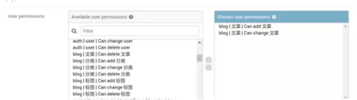

Django权限详解
如果你只是利用Django开发个人博客，大部分用户只是阅读你的文章而已，你可能根本用不到本文内容。但是如果你想开发一个内容管理系统或用户管理系统，你必需对用户的权限进行管理和控制。Django自带的权限机制(permissions)与用户组(group)可以让我们很方便地对用户权限进行管理。小编我今天就尝试以浅显的语言来讲解下如何使用Django自带的权限管理机制，并详细介绍如何使用Django-guardian实现对象级别的权限管理。
什么是权限?¶
权限是能够约束用户行为和控制页面显示内容的一种机制。一个完整的权限应该包含3个要素: 用户，对象和权限，即什么用户对什么对象有什么样的权限。
假设我们有一个应用叫blog，其包含一个叫Article(文章)的模型。那么一个超级用户一般会有如下4种权限，而一个普通用户可能只有1种或某几种权限，比如只能查看文章，或者能查看和创建文章但是不能修改和删除。
- 查看文章(view)
- 创建文章(add)
- 更改文章(change)
- 删除文章(delete)
我们在Django的管理后台(admin)中是可以很轻易地给用户分配权限的。
Django Admin中的权限分配¶
Django中的用户权限分配，主要通过Django自带的Admin界面进行维护的。当你编辑某个user信息时, 你可以很轻易地在User permissions栏为其设置对某些模型查看, 增加、更改和删除的权限(如下图所示)。

Django的权限permission本质是<font style="color:rgb(92, 89, 98);background-color:rgb(245, 246, 250);">djang.contrib.auth</font>中的一个模型, 其与User的<font style="color:rgb(92, 89, 98);background-color:rgb(245, 246, 250);">user_permissions</font>字段是多对多的关系。当我们在<font style="color:rgb(92, 89, 98);background-color:rgb(245, 246, 250);">INSTALLED_APP</font>里添加好auth应用之后，Django就会为每一个你安装的app中的模型(Model)自动创建4个可选的权限：view, add,change和delete。(注: Django 2.0前没有view权限)。随后你可以通过admin将这些权限分配给不同用户。
查看用户的权限¶
权限名一般有app名(app_label)，权限动作和模型名组成。以blog应用为例，Django为Article模型自动创建的4个可选权限名分别为:
- 查看文章(view):
<font style="color:rgb(92, 89, 98);background-color:rgb(245, 246, 250);">blog.view_article</font> - 创建文章(add):
<font style="color:rgb(92, 89, 98);background-color:rgb(245, 246, 250);">blog.add_article</font> - 更改文章(change):
<font style="color:rgb(92, 89, 98);background-color:rgb(245, 246, 250);">blog.change_article</font> - 删除文章(delete):
<font style="color:rgb(92, 89, 98);background-color:rgb(245, 246, 250);">blog.delete_article</font>
在前例中，我们已经通过Admin给用户A(user_A)分配了创建文章和修改文章的权限。我们现在可以使用<font style="color:rgb(92, 89, 98);background-color:rgb(245, 246, 250);">user.has_perm()</font>方法来判断用户是否已经拥有相应权限。下例中应该返回True。
如果我们要查看某个用户所在用户组的权限或某个用户的所有权限(包括从用户组获得的权限)，我们可以使用<font style="color:rgb(92, 89, 98);background-color:rgb(245, 246, 250);">get_group_permissions()</font>和<font style="color:rgb(92, 89, 98);background-color:rgb(245, 246, 250);">get_all_permissions()</font>方法。
新增自定义权限¶
有时django创建的4种可选权限满足不了我们的要求，这时我们需要自定义权限。实现方法主要有两种。下面我们将分别使用2种方法给Article模型新增了两个权限，一个是<font style="color:rgb(92, 89, 98);background-color:rgb(245, 246, 250);">publish_article</font>, 一个是<font style="color:rgb(92, 89, 98);background-color:rgb(245, 246, 250);">comment_article</font>。
方法1. 在Model的meta属性中添加权限¶
| Python | |
|---|---|
方法2. 使用ContentType程序化创建权限¶
当你使用<font style="color:rgb(92, 89, 98);background-color:rgb(245, 246, 250);">python manage.py migrate</font>命令后，你会发现Django admin的<font style="color:rgb(92, 89, 98);background-color:rgb(245, 246, 250);">user permissions</font>栏又多了两个可选权限。
## 手动分配权限
如果你不希望总是通过admin来给用户设置权限，你还可以通过视图函数手动给用户分配权限。这里也有两种实现方法。
方法1. 使用user_permissions.add方法增加权限¶
| Python | |
|---|---|
方法2. 通过用户组(group)给用户增加权限¶
| Python | |
|---|---|
方法3. 通过remove或如clear方法移除权限¶
如果你希望在代码中移除一个用户的权限，你可以使用<font style="color:rgb(92, 89, 98);background-color:rgb(245, 246, 250);">remove</font>或<font style="color:rgb(92, 89, 98);background-color:rgb(245, 246, 250);">clear</font>方法。
| Python | |
|---|---|
注意权限的缓存机制¶
Django会缓存每个用户对象，包括其权限<font style="color:rgb(92, 89, 98);background-color:rgb(245, 246, 250);">user_permissions</font>。当你在代码中手动改变一个用户的权限后，你必须重新获取该用户对象，才能获取最新的权限。比如下例在代码中给用户手动增加了<font style="color:rgb(92, 89, 98);background-color:rgb(245, 246, 250);">change_blogpost</font>的权限，如果不重新载入用户，那么将显示用户还是没有<font style="color:rgb(92, 89, 98);background-color:rgb(245, 246, 250);">change_blogpost</font>的权限。
用户权限的验证¶
我们前面讲解了用户权限的创建和设置，现在我们将进入关键一环，用户权限的验证。我们在分配好权限后，我们还需要在视图<font style="color:rgb(92, 89, 98);background-color:rgb(245, 246, 250);">views.py</font>和模板里验证用户是否具有相应的权限，否则前面设置的权限形同虚设。这就是为什么我们前面很多django实战案例里，没有给用户分配某个模型的add和change权限，用户还是还能创建和编辑对象的原因。
视图中验证¶
在视图中你当然可以使用<font style="color:rgb(92, 89, 98);background-color:rgb(245, 246, 250);">user.has_perm</font>方法对一个用户的权限进行直接验证。当然一个更好的方法是使用<font style="color:rgb(92, 89, 98);background-color:rgb(245, 246, 250);">@permission_required</font>这个装饰器。
| Python | |
|---|---|
你如果指定了<font style="color:rgb(92, 89, 98);background-color:rgb(245, 246, 250);">login_url</font>, 用户会被要求先登录。如果你设置了<font style="color:rgb(92, 89, 98);background-color:rgb(245, 246, 250);">raise_exception=True</font>, 会直接返回403无权限的错误，而不会跳转到登录页面。使用方法如下所示:
| Python | |
|---|---|
如果你使用基于类的视图(Class Based View), 而不是函数视图，你需要混入<font style="color:rgb(92, 89, 98);background-color:rgb(245, 246, 250);">PermissionRequiredMixin</font>这个类或使用<font style="color:rgb(92, 89, 98);background-color:rgb(245, 246, 250);">method_decorator</font>装饰器，如下所示:
模板中验证¶
在模板中验证用户权限主要需要学会使用<font style="color:rgb(92, 89, 98);background-color:rgb(245, 246, 250);">perms</font>这个全局变量。perms对当前用户的<font style="color:rgb(92, 89, 98);background-color:rgb(245, 246, 250);">user.has_module_perms</font>和<font style="color:rgb(92, 89, 98);background-color:rgb(245, 246, 250);">user.has_perm</font>方法进行了封装。当我们需要判断当前用户是否拥有blog应用下的所有权限时，我们可以使用:
| Python | |
|---|---|
我们如果判断当前用户是否拥有blog应用下发表文章讨论的权限，则使用:
| Python | |
|---|---|
这样结合template的if标签，我们可以通过判断当前用户所具有的权限，显示不同的内容了.
用户组(Group)¶
用户组(Group)和User模型是多对多的关系。其作用在权限控制时可以批量对用户的权限进行管理和分配，而不用一个一个用户分配，节省工作量。将一个用户加入到一个Group中后，该用户就拥有了该Group所分配的所有权限。例如，如果一个用户组<font style="color:rgb(92, 89, 98);background-color:rgb(245, 246, 250);">editors</font>有权限<font style="color:rgb(92, 89, 98);background-color:rgb(245, 246, 250);">change_article</font>, 那么所有属于editors组的用户都会有这个权限。
将用户添加到用户组或者给用户组(group)添加权限，一般建议直接通过django admin进行。如果你希望手动给group添加或删除权限，你可以使用如下方法:
| Python | |
|---|---|
如果你要将某个用户移除某个用户组，可以使用如下方法:
Django自带权限机制的不足¶
Django自带的权限机制是针对模型的，这就意味着一个用户如果对Article模型有change的权限，那么该用户获得对所有文章对象进行修改的权限。如果我们希望实现对单个文章对象的权限管理，我们需要借助于第三方库比如<font style="color:rgb(92, 89, 98);background-color:rgb(245, 246, 250);">django-guardian</font>。具体扩展方式见下文。
Django-guardian的使用¶
安装与配置¶
| Python | |
|---|---|
安装完成后，我们可以将<font style="color:rgb(92, 89, 98);background-color:rgb(245, 246, 250);">django-guardian</font>加入到我们的项目。首先在<font style="color:rgb(92, 89, 98);background-color:rgb(245, 246, 250);">settings</font>里将guardian加入到<font style="color:rgb(92, 89, 98);background-color:rgb(245, 246, 250);">INSTALLED_APPS</font>。
然后加入到身份验证后端<font style="color:rgb(92, 89, 98);background-color:rgb(245, 246, 250);">AUTHENTICATION_BACKENDS</font>
| Python | |
|---|---|
注意：一旦我们将<font style="color:rgb(92, 89, 98);background-color:rgb(245, 246, 250);">django-guardian</font>配置进我们的项目，当我们调用migrate命令将会创建一个匿名用户的实例（名为<font style="color:rgb(92, 89, 98);background-color:rgb(245, 246, 250);">AnonymousUser</font> ）。guardian的匿名用户与Django的匿名用户不同。Django匿名用户在数据库中没有条目，但是Guardian匿名用户有，这意味着以下代码将返回意外的结果。
| Python | |
|---|---|
如果你希望关闭匿名用户面向对象的权限，可以设置<font style="color:rgb(92, 89, 98);background-color:rgb(245, 246, 250);">ANONYMOUS_USER_NAME=None</font>。
权限分配¶
加入我们有如下一个Task模型，我们自定义了一条<font style="color:rgb(92, 89, 98);background-color:rgb(245, 246, 250);">assign_task</font>的权限。
| Python | |
|---|---|
为用户分配权限¶
为用户组分配权限¶
同样使用<font style="color:rgb(92, 89, 98);background-color:rgb(245, 246, 250);">assign_perm</font>方法即可。
通过信号分配权限¶
下例展示了通过信号为新增用户分配了编辑个人资料的权限。
删除权限¶
使用<font style="color:rgb(92, 89, 98);background-color:rgb(245, 246, 250);">remove_perm</font>方法即可删除一个用户或用户组的权限。
| Python | |
|---|---|
权限验证¶
has_perm方法¶
get_perms方法¶
| Python | |
|---|---|
get_objects_for_user方法¶
该方法可以获取用户具有权限操作的对象列表
| Python | |
|---|---|
ObjectPermissionChecker¶
该方法可以缓存用户对一个对象的全部权限，减少数据库查询次数。
| Python | |
|---|---|
使用装饰器¶
标准的<font style="color:rgb(92, 89, 98);background-color:rgb(245, 246, 250);">permission_required</font>的装饰器不能用来检查对象权限，guardian提供了自己的装饰器。
| Python | |
|---|---|
模板中校验¶
模板中校验对象级别权限时需要用到<font style="color:rgb(92, 89, 98);background-color:rgb(245, 246, 250);">guardian</font>提供的<font style="color:rgb(92, 89, 98);background-color:rgb(245, 246, 250);">get_obj_perms</font>模板标签。
| Python | |
|---|---|
模板中可以使用如下方法获取一个用户或用户组对一个对象的权限。
| Python | |
|---|---|
示例代码如下所示：
| Python | |
|---|---|
与Django-admin的集成¶
使用<font style="color:rgb(92, 89, 98);background-color:rgb(245, 246, 250);">GuardedModelAdmin</font>，而不是Django的<font style="color:rgb(92, 89, 98);background-color:rgb(245, 246, 250);">ModelAdmin</font>。
使用定制User模型¶
如果你使用定制User模型，建议设置<font style="color:rgb(92, 89, 98);background-color:rgb(245, 246, 250);">GUARDIAN_MONKEY_PATCH = False</font>并将其继承<font style="color:rgb(92, 89, 98);background-color:rgb(245, 246, 250);">GuardianUserMixin</font>, 如下所示：
| Python | |
|---|---|
小结¶
本文详细总结了Django的权限管理机制，包括权限的分配、删除与校验，并详细介绍了如何使用Django-Guardian实现对象级别的权限控制。